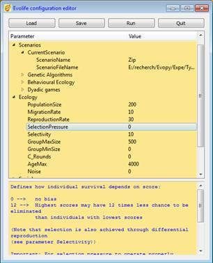

Evolife
Jean-Louis Dessalles

- Overall description
- How to execute Evolife (+ download)
- Evolife source files
- Evolife classes
- Evolife functions
- How Evolife works
- Create your own Evolife scenario
- Use Evolife’s components separately (graphics, ecology, genetic algorithm)
2. How to execute Evolife
Installation
The latest version of Evolife can be downloaded from: Evolife.zip
- You may extract the Evolife directory into an appropriate location.
- If you don’t know how to extract files from the archive (normally, you do it by merely clicking on it), you may copy-paste the following lines into a terminal window at the appropriate location:
python
import zipfile, sys
zipfile.ZipFile('Evolife.zip').extractall()
exit()
Evolife is written in Python (http://www.python.org/) and should therefore run on various platforms. You should install Python first. The current version of Evolife should run without too much trouble with old versions of Python (Python 2.6 or 2.7). It is however designed to run with Python 3 (tested with Python 3.4) (please report any problem you may notice).
Evolife’s graphics uses the PyQT4 package.
Execution
- On Unix or Linux: The first time, execute the command: python first.py from Evolife’s folder.
- Then, Evolife is launched by executing the command ./starter from Evolife’s directory.
- On MsWindows: Run Starter.bat from Evolife’s directory.
Starter shows a configuration editor that allows you to choose a scenario and to modify parameters, before running Evolife by clicking the [Run] button.

The Evolife Configuration Editor
The configuration editor provides a short description of each parameter at the bottom of the window.
The [Load] button loads an existing scenario. You may modify any parameter value. It is recommended to start from an existing scenario when creating a new one. If you need to add new parameters or modify the names of existing ones, simply edit the EvolifeConfigTree.xml file before executing Stater.bat.
The [Run] button executes Evolife. To do so, parameter values are stored in Evolife.evo, and Main.py is executed (or any program specified as Target in the Run Settings section of Starter). If you execute Main.py directly (sometimes useful to display an error when you customize Evolife), it will read Evolife.evo.
Configuration files (.evo files) are text files containing parameter-value pairs (one pair per line, separated by tab).
You may modify any Python source under Evolife’s directory, but you will most probably start by modifying the scenarios (see below).
If you experience difficulties with tabs in your Python editor, you may execute ./Detabify.py (located in Evolife’s directory) to replace all tabs by four spaces in all Python source files.
Predefined scenarios are located in the Scenarii directory. You may choose to add your own scenario in this directory. Alternatively, you may rename and modify S_Void.py. When writing your scenario, you can redefine any of the functions found in Default_Scenario.py. To do so, you may cut and paste functions from various scenarios in the Scenarii directory into your scenario.
As it stands, Main.py gives control to the Evolife main window and the simulation is run from there. However, the simulation is kept separate from the window system. For specific applications or tests, you may prefer to run the simulation without any graphic visualization. To do so, set the BatchMode parameter in the Configuration Editor (Starter). In that case, no display takes place and results are stored in unique files in the directory ___Results.
Output results of Evolife are stored in the following files, placed by default in the ___Results directory:
- <scen>.csv or <scen>_081016235225.csv (where <Scen> is the name of the scenario): contains the results of a single experiment. The longer name appears in batch mode only, indicating that the simulation was launched on October 16th, 2008, at 11h52 pm. This file contains the coordinates of the various curves that would have been displayed by Evolife if not in batch mode. This file can be executed using Microsoft-Excel or equivalent.
- <scen>.res or <scen>_081016235225.res (where <Scen> is the name of the scenario): contains the average results of a single experiment. Such files may be concatenated to average over several experiments.
- Images generated when you click on the [Photo] button or when in Film mode (shortcut v) are stored in the ___Results directory as well.
When not in batch mode, running several instances of Evolife simultaneously will cause these output files to be overwritten by the last terminating instance.
You may visualize a stored curve file (.csv or _081016235225.csv) using the Plot.py program (on the Evolife directory).
Type Plot.py from the Evolife directory to redisplay the last experiment.
The file Evolife_.evo (on the Evolife directory) contains the values of parameters actually used in the simulation (note the trailing underscore).
Buttons
- [Genome]: Displays the genomes of the population
- Each horizontal line represents the genome of one individual
- Vertical patterns result from correlations between individuals
- [Photo]: Enters Photo Mode:
- Prints a few data on the console
- Saves a screenshot for each opened window. Screenshots are saved automatically depending on Display Period, in .png files. These files can be assembled into animated gifs e.g. using ImageMagick. If you enter Film mode (by pressing key v), photos are taken automatically at each display period.
- Saves the current plots in Evolife.csv (which may be opened with Excel). This file is also created when exiting Evolife.
- [Run]: Runs the simulation in continuous mode
- [Step]: Runs the simulation stepwise
- [T]: Displays trajectories (when applicable)
- [A]: Displays alliances (social links between individuals, sorted by competence) (when applicable)
- [F]: Displays agents’ positions on a 2-D field
- [L]: Log messages (not implemented)
- [Help]: Displays this help file
- [Legend]: Displays legend for curves
Shortcuts
- <Esc>: quits the active window (and the application if main window is active) (like q)
- <F1>: displays this help file
- <space>: runs the simulation one step forward (like s)
- a:displays alliances (social links between individuals, sorted by competence) (when applicable)
- c: runs the simulation in continuous mode (like r)
- d: displays legend for curves
- f: displays a 2-D field on which agents may be located
- g: displays genomes
- h: displays this help file
- l: displays log messages (not implemented)
- m: alternatively brings main window or satellite windows to foreground
- q: quits the active window (and the application if main window is active) (like <Esc>)
- r: runs the simulation in continuous mode (like c)
- s: runs the simulation one step forward (like <space>)
- t: displays trajectories (when applicable)
- v: enters film mode. One picture per opened window is recorded
- z: shrinks satellite windows (genomes, alliances, labyrinth...) (dezoom)
- -: shrinks satellite windows (genomes, alliances, labyrinth...) (dezoom)
- +: expands satellite windows (genomes, alliances, labyrinth...) (zoom)
(These shortcuts are available from any window of the application.)